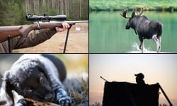

AnnonsTorget
Premiumannonser
 PREMIUMANNONS
Vill du synas?
Annonsera här
Välj län
Se upp för oseriösa jaktarrenden!
Om ni är spekulant på ett jaktarrende, kontrollera då att
den som utger sig för att vara jakträttshavare verkligen är det.
Be att få se en lagfart, jakträttskontrakt eller dylikt. Ta även referenser.
Annonstorget
Här kan du annonsera om allt möjligt som har med jakt, vilt och natur att göra.
Annonser med text (upp till 600 tecken) + bild (högst 8 MB).
Annonsen för privatpersoner ligger ute i 60 dagar.
För företag ligger annonsen ute i 30 dagar.
Medlem 20 kr
Icke medlem 50 kr
Företag 100 kr
Premiumannons + 500 kr (extra exponering i sju dagar)
Problem med annonseringen?
Kontakta oss på annonstorget@svenskjakt.se